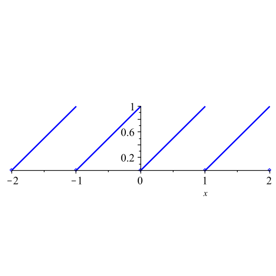

As we saw in our preview activity, if we have a surjection \(p\) from a topological space \((X,\tau)\) to a set \(Y\text{,}\) we were able to define a topology on \(Y\) by making the open sets the sets \(U \subseteq Y\) such that \(p^{-1}(U)\) is open in \(X\text{.}\) This is how we will create what is called the quotient topology. Before we can define the quotient topology, we need to know that this construction always makes a topology.
Activity16.2.
Let \((X,\tau_X)\) be a topological space, let \(Y\) be a set, and let \(p: X \to Y\) be a surjection. Let
Why are \(\emptyset\) and \(Y\) in \(\tau_Y\text{?}\)
(b)
Let \(\left\{U_{\beta}\right\}\) be a collection of sets in \(\tau_Y\) for \(\beta\) in some indexing set \(J\text{.}\)
(i)
Show that \(\bigcup_{\beta \in J} U_{\beta}\) is in \(\tau_Y\text{.}\)
(ii)
If \(J\) is finite, show that \(\bigcap_{\beta \in J} U_{\beta}\) is in \(\tau_Y\text{.}\)
(c)
What conclusion can we draw about \(\tau_Y\text{?}\)
Activity 16.2 allows us to define the quotient topology.
Definition16.1.
Let \((X,\tau_X)\) be a topological space, let \(Y\) be a set, and let \(p: X \to Y\) be a surjection.
The quotient topology on \(Y\) is the set
\begin{equation*}
\{U \subseteq Y \mid p^{-1}(U) \in \tau_X\}\text{.}
\end{equation*}
Any function \(p: X \to Y\) is a quotient map if \(p\) is surjective and for \(U \subseteq Y\text{,}\)\(U\) is open in \(Y\) if and only if \(p^{-1}(U)\) is open in \(X\text{.}\)
If \(p: X \to Y\) is a quotient map, then the space \(Y\) is the quotient space of \(X\) determined by \(p\text{.}\)
Activity16.3.
(a)
Let \(X=\R\) with standard topology, let \(Y=\{-1,0,1\}\text{,}\) and define \(p:X \to Y\) by
\begin{equation*}
p(x) = \begin{cases}1\amp \text{ if } x>0 \\ 0 \amp \text{ if } x=0 \\ -1 \amp \text{ if } x\lt 0. \end{cases}
\end{equation*}
Find all of the open sets in the quotient topology.
(b)
Let \(X=\R\) with standard topology, let \(Y=[0,1)\text{,}\) and define \(p:X \to Y\) by
where \(\lfloor x\rfloor\) is the largest integer less than or equal to \(x\text{,}\) (For example \(\lfloor 1.2 \rfloor = 1\text{,}\) and so \(p(1.2) = 1.2 - 1 = 0.2\text{.}\) The function defined by \(\lfloor x\rfloor\) is also called the floor function. Be careful, note that \(\lfloor -0.7 \rfloor = -1\text{.}\)) Determine the sets in the quotient topology.

Figure16.2.The graph of \(p(x) = x - \lfloor x\rfloor\text{.}\)
The graph of \(p\) on \([-2,2]\) is shown in Figure 16.2.
Another perspective of the quotient topology utilizes the fact that any equivalence relation \(\sim\) on a set \(X\) partitions \(X\) into a union of disjoint equivalence classes \([x] = \{y \in X \mid y \sim x\}\text{.}\) There is a natural surjection \(q\) from \(X\) to the space of equivalence classes given by \(q(x) = [x]\text{.}\) We investigate this perspective in the next activity.
Activity16.4.
Let \(X = \{a,b,c,d,e,f\}\) and let \(\tau = \{\emptyset, \{a\}, \{b\}, \{a, b\}, \{a, b, c\}, \{a, b, c, d\}, X\}\text{.}\) Then \((X, \tau)\) is a topological space. Let \(A = \{a, b, c\}\) and \(B = \{d,e,f\}\text{.}\) Define a relation \(\sim\) on \(X\) such that \(x \sim y\) if \(x\) and \(y\) are both in \(A\) or both in \(B\text{.}\) Assume that \(\sim\) is an equivalence relation. The sets \(A\) and \(B\) are the equivalence classes for this relation. That is \(A = [a] = [b] = [c]\) and \(B = [d] = [e] = [f]\text{.}\) Let \(X^* = \{A,B\}\text{.}\) Then we can define \(p : X \to X^*\) by sending \(x \in X\) to the set to which it belongs. That is, \(p(x) = [x]\) for \(x \in X\text{,}\) or
\begin{equation*}
p(a) = A, p(b) = A, p(c) = A, p(d) = B, p(e) = B, \text{ and } p(f) = B\text{.}
\end{equation*}
Determine the sets in the quotient topology on \(X^*\text{.}\)
The partition of \(X\) in Activity 16.4 into the disjoint union of sets \(A\) and \(B\) defines an equivalence relation on \(X\) where \(x \sim y\) if \(x\) and \(y\) are both in the same set \(A\) or \(B\text{.}\) That is, \(a \sim b \sim c\) and \(d \sim e \sim f\text{.}\) In this context, the sets \(A\) and \(B\) are equivalence classes — \(A = [a]\) and \(B = [d]\text{,}\) where \([x]\) is the equivalence class of \(x\text{.}\) This leads to a general construction.
If \((X, \tau)\) is a topological space and \(\sim\) is an equivalence relation on \(X\text{,}\) we can let \(X/\ssim\) be the set of distinct equivalence classes of \(X\) under \(\sim\text{.}\) Then \(p: X \to X/\ssim\) defined by \(p(x) = [x]\) is a surjection and \(X/\ssim\) has the quotient topology. The space \(X/\ssim\) is called a quotient space. The space \(X/\ssim\) is also called an identification space because the equivalence relation identifies points in the set to be thought of as the same. This allows us to visualize quotient spaces as resulting from gluing or collapsing parts of the space \(X\text{.}\)
Figure16.3.A tube as the identification space \(X/\ssim\text{.}\)
Example16.4.
Let \(I = [0,1]\) and let \(X = I \times I\) with standard topology. Define a relation \(\sim\) on \(X\) by \((x,y) \sim (x,y)\) if \(0 \lt y \lt 1\) and \(0 \leq x \leq 1\text{,}\)\((x,0) \sim (x,1)\) if \(0 \leq x \leq 1\text{.}\) It is straightforward to show that \(\sim\) is an equivalence relation. Let us consider what the identification space \(X/\ssim\) looks like. The space \(I \times I\) is the unit square as shown in Figure 16.3. All points in the interior of the square are identified only with themselves. However, the top side and bottom side are identified with each other in the same direction. Think of \(X\) as a piece of paper. We roll up the sides of the square to make the top and bottom sides coincide. The result is that \(X/\ssim\) is the cylinder as shown in Figure 16.3.
Activity16.5.
Quotient spaces can be difficult to describe. This activity presents a few more examples.
(a)
Let \(X = [0, 1]\) with standard topology and define an equivalence relation \(\sim\) on \(X\) by \(0 \sim 1\) and \(x \sim x\) for all \(x\) not equal to \(0\) or \(1\text{.}\) What does the quotient space \(X/\ssim\) look like?
Figure16.5.From left to right: the identifications for parts i., ii., and iii.
Think about the relation \(\sim\) as gluing the points \(0\) and \(1\) together.
(b)
Describe quotient spaces of \(X = I \times I\) with standard topology given by the following equivalence relations \(\sim\text{.}\) Depictions of the identifications are shown in Figure 16.5. (Here \(I\) is the closed interval \([0,1]\text{.}\))
(i)
\((x, y) \sim (x,y)\) if \(0 \lt y \lt 1\) and \(0 \leq x \leq 1\) and \((x,0) \sim (1-x,0)\) when \(0 \leq x \leq 1\text{.}\)
(ii)
\((x, y) \sim (x,y)\) if \(0 \lt x \lt 1\) and \(0 \lt y \lt 1\text{,}\)\((x,0) \sim (x,1)\) for \(0 \lt x \lt 1\text{,}\)\((0,y) \sim (1,y)\) for \(0 \lt y \lt 1\text{,}\) and \((0,0) \sim (0,1) \sim (1,0) \sim(1,1)\)
(iii)
\((x, y) \sim (x,y)\) if \(0 \lt x \lt 1\) and \(0 \lt y \lt 1\) and \((x,y) \sim (u,v)\) if \((x,y)\) and \((u,v)\) are boundary points.
Many other interesting identification spaces can be made. For example, let \(X = I \times I\) and define \(\sim\) by \((x, y) \sim (x,y)\) if \(0 \lt x \lt 1\) and \(0 \lt y \lt 1\text{,}\)\((0, y) \sim (1, y)\) for \(0 \lt y \lt 1\text{,}\)\((x,0) \sim (1-x,1)\) for \(0 \lt x \lt 1\text{.}\) This identification is illustrated in Figure 16.6. The resulting identification space \(X/\ssim\) is a Klein bottle. A nice illustration of this can be seen at maths.org 5 .